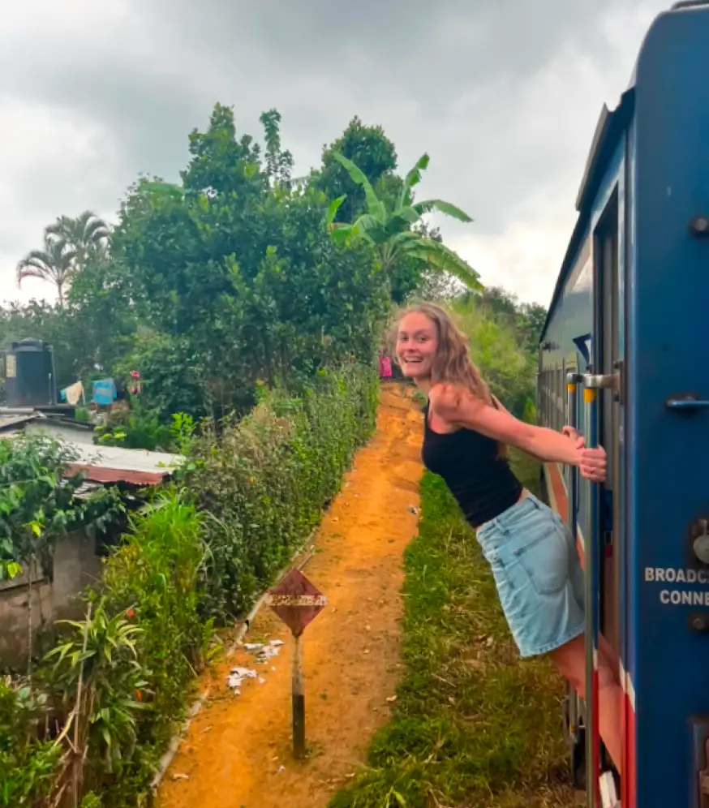
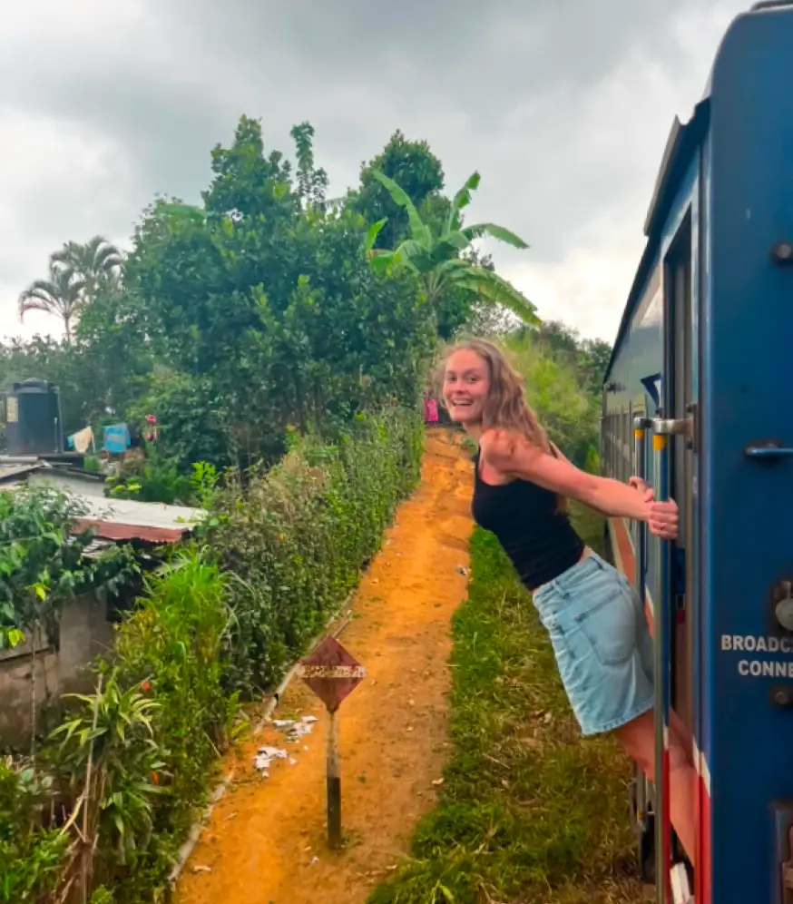

Portfolio af Nynne Tijhuis
Velkommen til min portofolie:
Dette er en portfoliohjemmeside, som præsenterer de fire hjemmesider, jeg har udviklet på mit første semester. Portfolioen viser min læringsrejse og de kompetencer, jeg har opbygget fra bunden, da jeg ikke havde forudgående erfaring. Fokus er på min løsningsproces, hvordan jeg har arbejdet med idéudvikling, struktur og brugerforståelse, samt hvad jeg har lært gennem arbejdet med hvert projekt.
Se nærmere på:
 
